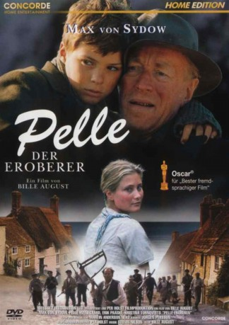
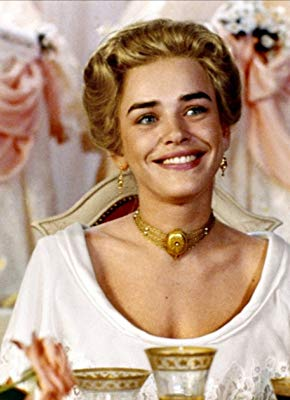

#4276 Pelle, der Eroberer
Alternativ: Pelle the Conqueror (Englischer Titel)
Auszeichnungen: 1 Oscars gewonnen für 1 Oscars nominiert 1 GoldenGlobes gewonnen
 
 IMDB-Wertung: 7.9 / 10
IMDB-Wertung: 7.9 / 10  Metascore: 0
Metascore: 0 
Bille Augusts preisgekröntes Drama aus dem Jahre 1987. Er erztählt die Geschichte von Lasse und seinem Sohn Pelle, die Ende des 19. Jahrhunderts von Schweden nach Dänemark fliehen, um dort einer besseren Zukunft ins Auge sehen zu können. Doch die Realität macht ihnen einen Strich durch die Rechnung. Während Lasse als Kuhknecht Arbeit findet, träumt Pelle von der Eroberung der großen weiten Welt.
Jahr: 1987
Dauer: 157 Minuten
FSK: 12
Land: Dänemark Studio: Koch MediaTonspuren: DTS - ,
Untertitel:
Auflösung: 1080p (1920x1024) Größe: 17100 MB
Genre: Drama
Regisseur: Bille August
Drehbuch: Heide Schwochow
Soundtrack:
Darsteller:
 Max von Sydow als Lassefar
Max von Sydow als Lassefar-  Björn Granath als Erik
- Sofie Gråbøl als Jomfru Sine / Miss Sine
- Lars Simonsen als Niels Køller
- Thure Lindhardt als Nilen - Skoleelev / Classmate
- Pelle Hvenegaard als Pelle
- Erik Paaske als Forvalter / Foreman
- Astrid Villaume als Fru Kongstrup / Mrs. Kongstrup
- Axel Strøbye als Kongstrup
- Troels Asmussen als Rud
- Kristina Törnqvist als Anna
- Karen Wegener als Madam Olsen / Mrs. Olsen
- Buster Larsen als Ole Køller
- John Wittig als Skolelærer / School teacher
- Troels Munk als Læge / Doctor
- Nis Bank-Mikkelsen als Præst / Clergyman
- Lena-Pia Bernhardsson als Soen / The Sow
- Anna Lise Hirsch Bjerrum als Karna
- Vilhelm Weber als Karl på Stengården / Farmhand at Stengården
- Merete Holst Hansen als Pige på Stengården / Servant girl at Stengården
- Mogens Dester als Karl på Stengården / Farmhand at Stengården
- Tine Stochholm als Pige på Stengården / Servant girl at Stengården
- Finn Knygberg als Karl på Stengården / Farmhand at Stengården
- Inge Marie From als Pige på Stengården / Servant girl at Stengården
- Henrik Hansen als Karl på Stengården / Farmhand at Stengården
- Jytte Strandberg als Pige på Stengården / Servant girl at Stengården
- Jørgen Hansen als Karl på Stengården / Farmhand at Stengården
- Nina Christoffersen als Pige på Stengården / Servant girl at Stengården
- Finn Olsen als Karl på Stengården / Farmhand at Stengården
- Lone Svendsen als Pige på Stengården / Servant girl at Stengården
- Thyge Andersen als Karl på Stengården / Farmhand at Stengården
- Birthe Jensen als Pige på Stengården / Servant girl at Stengården
- Henning Franck Hansen als Skoleelev / Classmate
- Thomas Hansen als Skoleelev / Classmate
- Lars Petersen als Skoleelev / Classmate
- Karen Bjørkøe als Skoleelev / Classmate
- Espen Hegnet Knudsen als Skoleelev / Classmate
- Sascha Lystrup Andersen als Skoleelev / Classmate
- Jeppe Nicolaisen als Skoleelev / Classmate
- Rikke Hacke als Skoleelev / Classmate
- Oliver Grumme als Skoleelev / Classmate
- Henriette Nielsen als Skoleelev / Classmate
- Benjamin Holk Henriksen als Henrik Bodker - Skoleelev / Classmate
- Henriette Nolsøe als Skoleelev / Classmate
- Ingeborg Holten als Skoleelev / Classmate
- David Heilman als Skoleelev / Classmate
- Daniel Roosen als Skoleelev / Classmate
- Kurt Frederiksen als Fisker / Fisherman , uncredited
- Morten Jørgensen als Landbrugselev / Farming trainee , uncredited
Datei: X:\1986\Pelle der Eroberer (1986, FSK, 1920x1024).mkv seit 30.08.2016
Festplatte: HD 1980-1986
 Es gibt insgesamt 50 Filme in der Gruppe '1986'
Es gibt insgesamt 50 Filme in der Gruppe '1986'